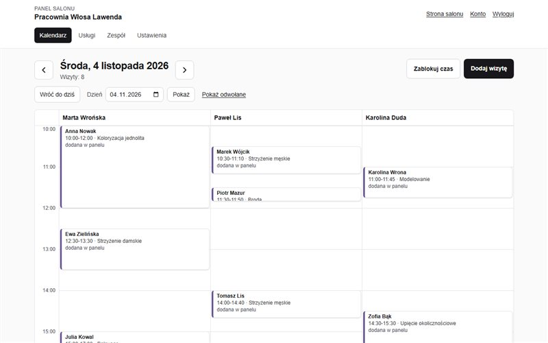

Każdy projekt zbudowałem z AI, od pomysłu do działającej wersji. Przy każdym piszę, w czym pomogło AI i co sprawdziłem sam.

Projekt 01
System rezerwacji dla salonów
Claude Code
Next.js
TypeScript
Supabase
Vercel
Resend
Playwright
CelZbudować własny system rezerwacji, który można skonfigurować dla dowolnego salonu.
RozwiązanieRezerwacja online osadzona na stronie salonu, potwierdzenia i przypomnienia e-mail oraz panel z kalendarzem, usługami, grafikiem i ustawieniami.
EfektSystem działa publicznie na 3 fikcyjnych salonach. Podwójną rezerwację blokuje baza, a całość sprawdza ponad 200 testów automatycznych, także na telefonie i w Safari.